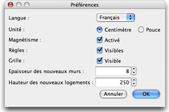

Pour éditer les préférences de Sweet Home 3D, choisissez Sweet Home 3D > Préférences... sous
Mac OS X ou Fichier > Préférences... sous les autres systèmes d'exploitation.

Dans le panneau des préférences, vous pouvez choisir la Langue utilisée dans l'interface utilisateur
de Sweet Home 3D et l'Unité utilisée
pour dessiner les règles et la grille du plan du
logement, et pour afficher les longueurs.
La boîte à cocher Magnétisme active ou désactive le magnétisme utilisé dans le plan du logement
au cours du dessin des murs et le positionnement des meubles.
La boîte à cocher Règles permet de rendre visibles ou invisibles les règles affichées
en haut et à gauche du plan.
La boîte à cocher Grille permet de rendre visible ou invisible la grile affichée
sous le plan.
La valeur de l'Epaisseur des nouveaux murs détermine l'épaisseur des murs qui seront créés
une fois que le panneau des préférences sera fermé.
La valeur de la Hauteur des nouveaux murs détermine la hauteur des murs qui seront
créés
une fois que le panneau des préférences sera fermé.
|